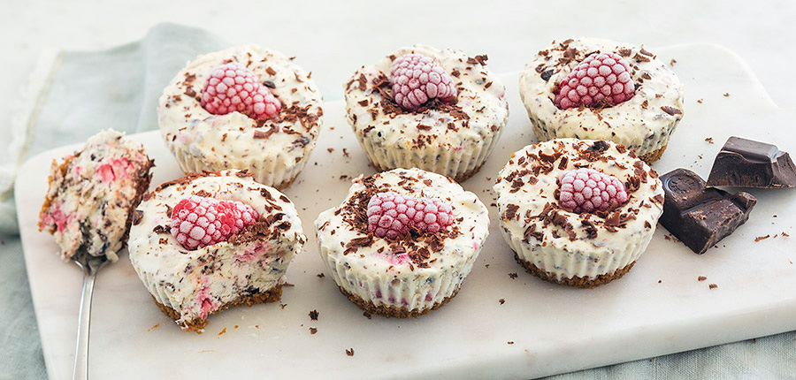

Mini-ijstaartjes-stracciatella

Ingrediënten
- 10 stuks
- 0.42 blikje gecondenseerde melk
- 208.33 ml slagroom
- 41.67 gr pure chocolade
- 100 gr Bastogne koeken
- 83.33 gr frambozen
- 33.33 gr boter (gesmolten)
Benodigdheden
- Keukenmachine
- mixer
- 10 cupcakevormpjes
Bereiding
- Smelt de boter. Doe de koekjes in de keukenmachine en maal fijn. Meng met de gesmolten boter. Verdeel dit over de de bodem van de muffinvormpjes en druk aan. Zet in de vriezer.
- Mix de slagroom en gecondenseerde melk lobbig. Pureer ongeveer de helft va de frambozen. Rasp de chocolade. Schep de snippers chocolade door de room (bewaar een beetje voor de garnering) samen met de gepureerde frambozen.
- Neem de vormpjes uit de vriezer en vul ze met het roommengsel. Garneer met frambozen en een beetje chocolade en zet weer in de vriezer. Laat ze minimaal 6 uur opstijven.